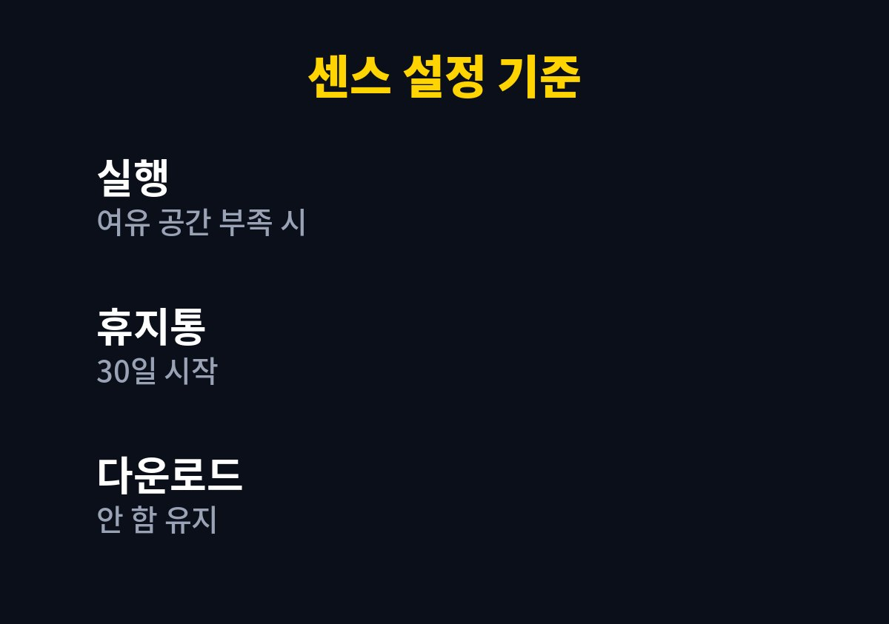
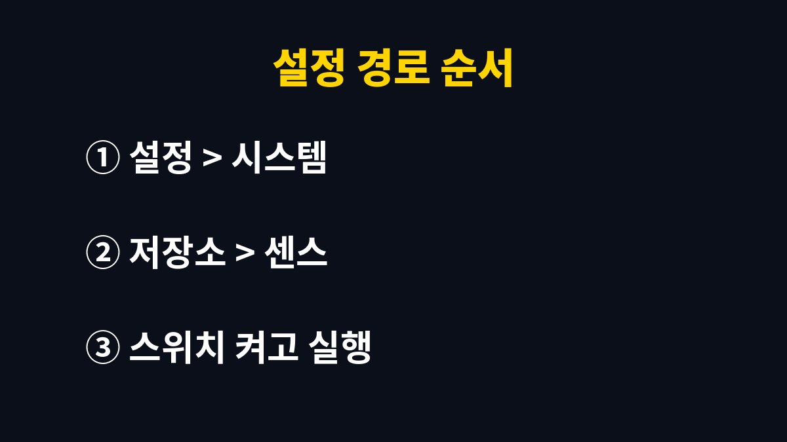

윈도우11 저장 공간 센스는 설정 > 시스템 > 저장소에서 스위치 하나로 켤 수 있고, 켜 두면 임시 파일과 휴지통을 정해 둔 주기로 알아서 비운다.
다만 기본값 그대로 두면 안 되는 항목이 하나 있다. 다운로드 폴더 자동 삭제다.
업데이트가 끝난 뒤 남는 설치 파일, 프로그램이 만든 캐시, 지우고 비우지 않은 휴지통이 C드라이브에 조용히 쌓인다.
사진이나 영상처럼 눈에 보이는 파일이 없는데도 여유 공간이 줄었다면 이쪽을 먼저 의심한다.
저장 공간 센스는 이런 부스러기를 사람이 기억하지 않아도 치우도록 만든 기능이다.
시작 메뉴에서 설정을 열고 시스템 > 저장소로 들어간다.
화면 가운데쯤에 저장 공간 센스 항목이 있고, 이름을 누르면 세부 화면이 열린다.
첫 줄의 임시 파일 자동 정리 스위치를 켜면 기본 기능이 시작된다.
이 기능은 용량이 넉넉한 PC에서는 체감이 거의 없다.
256GB 안팎의 작은 SSD에 사진 원본과 게임을 함께 둔 노트북처럼, 여유 공간이 늘 빠듯한 기기에서 쓸모가 크다.
반대로 저장소가 수백 GB 남아 있다면 굳이 설정을 건드리지 않아도 된다.
또 앱이 차지한 공간이나 내 문서, 사진 폴더는 이 기능이 건드리지 않으므로 큰 파일 문제는 따로 풀어야 한다.
세부 화면에는 세 가지 선택지가 나온다.
저장 공간 센스를 실행할 시점, 휴지통 파일을 지울 기간, 다운로드 폴더 파일을 지울 기간이다.
나라면 아래 표처럼 시작한다.
| 항목 | 고를 수 있는 값 | 시작할 때 고를 값 |
|---|---|---|
| 실행 시점 | 매일, 매주, 매월, 여유 공간이 부족할 때 | 여유 공간이 부족할 때 |
| 휴지통 비우기 | 안 함, 1일, 14일, 30일, 60일 | 30일 |
| 다운로드 폴더 | 안 함, 1일, 14일, 30일, 60일 | 안 함 |

다운로드 폴더가 이 글의 걸림돌이다.
브라우저로 받은 계약서나 영수증 PDF를 그대로 두고 쓰는 사람이 많다.
30일이 지나 사라진 파일은 휴지통에도 남지 않는 경우가 있어 되살리기 어렵다.
자주 쓰는 파일이 다운로드 폴더에 머문다면 이 값은 안 함으로 두는 편이 안전하다.
같은 저장소 화면에서 임시 파일을 누르면 지울 수 있는 항목이 크기와 함께 줄지어 나온다.
Windows 업데이트 정리, 배달 최적화 파일, 썸네일, 휴지통 같은 이름이 보인다.
다운로드 항목은 기본 선택이 해제되어 있지만 목록에 함께 나오므로, 체크 상태를 보고 파일 삭제를 누른다.
예를 들어 큰 업데이트를 마친 직후라면 Windows 업데이트 정리 항목의 크기가 눈에 띄게 커져 있을 수 있다.
이럴 때 한 번 직접 비우면 자동 정리를 기다리지 않아도 여유 공간이 바로 늘어난다.
직접 정리할 때는 목록의 항목 이름 옆에 적힌 크기부터 훑는다.
크기가 작은 항목을 하나하나 읽는 것보다 큰 두세 개만 확인하는 쪽이 빠르다.
항목 설명에 이전 Windows 설치 같은 문구가 보이면 그 PC에서 롤백할 일이 없는지 먼저 따져 본다.
스위치를 켜고 실행까지 했는데도 빨간 막대가 그대로인 경우가 있다.
저장소 화면 위쪽의 사용 중인 공간 막대는 앱 및 기능, 임시 파일, 문서, 사진 같은 범주별 용량을 나눠 보여 준다.
막대에서 가장 긴 범주를 눌러 들어가면 어디서 공간을 쓰는지 바로 알 수 있다.
앱 범주가 길면 안 쓰는 프로그램을 제거한다.
사진과 문서 범주가 길면 외장 저장장치나 클라우드로 옮긴 뒤 원본을 비운다.
옮기기 전에 복사본이 열리는지 한 번 확인하는 단계를 건너뛰지 않는다.
저장 공간 센스는 이 중 어느 것도 대신해 주지 않는다.

이 기능은 내 파일을 대신 고르는 도구가 아니라 규칙대로 지우는 도구다.
규칙이 나와 맞지 않으면 설정을 되돌리면 된다.
스위치를 끈다고 이미 지워진 파일이 돌아오지는 않는다.
한 달쯤 지나 저장소 화면을 다시 열어 임시 파일 크기가 얼마나 줄었는지 비교해 보면 설정이 제대로 돌고 있는지 확인된다.
크기가 거의 그대로라면 실행 시점이 여유 공간이 부족할 때로 되어 있어 아직 작동할 일이 없었던 것일 수 있다.
이때는 실행 시점을 매월로 바꿔 두면 정기적으로 돈다.
자동 정리를 켠 뒤에도 여유 공간이 계속 모자라면 임시 파일이 아니라 앱과 큰 파일이 원인일 가능성이 높다.
다음에는 저장소 화면의 앱 항목에서 크기순으로 정렬해 안 쓰는 프로그램부터 확인해 본다.
참고 자료: Microsoft 지원 「저장 공간 센스로 드라이브 공간 관리」(2026년 11월 확인)
※ 2026년 기준 공식 안내를 바탕으로 정리한 글이며, 기기·앱 버전에 따라 메뉴 이름이 다를 수 있다.